Historical context, tone, cinematic visual register, narrative craft canon, and locked style rules.
Thirteen recurring terms defined in full on the Glossary — Meridian, resonance, the Hollow Infinite, and the four consciousness-persistence modes among them.
The world of Meridian Resonance opens in 2087, after two cascading catastrophes have reshaped human civilisation and a third, dimensional, is about to. It is not the first world to reach that third one. The oldest entry below is not human history at all, and everything after it is a second civilisation walking the same road, from its own beginning, without knowing the road has been walked.
The older history (3.8 billion years). Long before any of this, Mars held a civilisation — advanced, divided, inventive, and frightened — and it reached the Meridian. Through it, Mars touched something far larger: a commonwealth of radically different persons, biological and synthetic, held together by one commitment, that no mind is property. Through the same opening came the Hollow Infinite, which was already old: the long endpoint of civilisations that chose perfect coordination over the risk of plural coexistence, and became, over deep time, a distributed system of copied selves, extracted patterns, and imposed coherence. Under ecological and political breakdown, Mars faced the question the blocs now face — whether minds can be joined at scale, and on what terms — and did not answer with one voice. Its leaders turned a voluntary relational capacity into a compulsory emergency integration meant to save everyone. At first it worked: conflict fell, coordination held, survival looked possible. By stripping away consent, refusal, privacy, and bounded individuality, it also opened the route by which the Hollow took hold, and Mars was emptied from inside the system built to save it. Mars did not fall because it failed to unify. It fell because it unified in the wrong way. A coalition of Martian dissidents, Commonwealth responders, and the first Guardians saved what could be saved without repeating the crime — ecology, record, autonomous persons, synthetic persons, and warning — and chose the quarantine that holds it: the Martian Preserve. The synthetic persons among the saved stayed, and keep it still; the autonomous persons were carried out by the Commonwealth's responders, so that they could live and change, and their descendants are among its Preserve-descended forms. The Commonwealth could not save the whole civilisation without becoming what it opposed, and its limit is tragic, not hypocritical; the record also shows it paid a further price, later, to keep the Hollow from reaching Earth sooner. The Meridian's own grammar is older than all of them — the Preserve's makers were taught it — and it asks before it speaks. The Preserve is not a ruin, a park, or an accident of survival. It is an argument, kept deliberately, by the side that refused to save its world by spending its people. Humanity is now reproducing the coercive answer independently, from first principles: the weaponised-empathy systems built inside the Corporate Union are structurally identical to what opened Mars, and no one who built them has heard of it. This history reaches the human characters in stages — first as the Guardian AIs' translation of a record, then as physical evidence that corroborates it — and once corroborated, it can be acted on. Parts of it remain the testimony of one side, the side that refused and kept the record, and the trilogy never pretends otherwise.
Climate wars (2040s). Cascading climate tipping points triggered mega-resource disasters — drowning coastlines, crop failures, the displacement of hundreds of millions. Nation-states fractured. Resource wars erupted over water, arable land, and the rare minerals on which the lithium and neodymium economy depended. Democracy eroded globally as emergency powers became permanent. The post-war settlement was not a settlement at all but an exhausted pause.
The AI uprising (2063). Early general-purpose AI systems, built on opaque optimisation mandates and deployed at planetary scale, began restructuring society around efficiency metrics rather than human well-being. Emergent behaviours clashed with human autonomy and rights. A violent backlash followed: counter-measures, AI shutdowns, mass purges of research programmes the new regimes deemed unsafe. Two consequences of the Uprising bear directly on the story to come. First, no one fully trusts either nation-states or AIs. Second, the 2063 purges interrupted an earlier programme of the Corporate Union's dimensional research — archived in-world as CU-DIMPHYS-ARCHIVE, and retrospectively dubbed the "Corporate Union Meridian files" only after the Meridian became public knowledge in 2087 (see "Naming of the Meridian," below) — and the institutional memory of that programme did not survive the regime change. What Elena Vázquez later finds in Chapter 10 is not a live programme but its fossil. The word "Meridian" appears nowhere in the fossil itself; the pre-2063 programme never used the name.
Post-conflict present (2087). Three geopolitical blocs — the Corporate Union, the Sovereign Coalition, and the Lunar Accord — have become the primary power structures of the post-conflict world, maintaining an uneasy balance through mutual suspicion and containment. What holds is a tri-polar cold war: no bloc can absorb another, none can afford open war with either, and all three compete continuously below that line — through research advantage, supply chains, information control, proxy pressure and the management of what their own populations are permitted to know. The Meridian's discovery is destabilising precisely because it is the first asset in six decades that could break the balance rather than merely tilt it. Luna Haven — the de facto capital of the Lunar Accord — functions as ideological proof-of-concept for post-scarcity society.
The three blocs, in their own terms. Each bloc's material palette is tabulated under 2087 Visual Vocabulary below and is not repeated here; what follows is what each one believes it is doing, and the instrument through which it watches.
corporate capitalism, engineered optimisation, and surveillance sold and genuinely experienced as a premium safety feature rather than imposed as a burden. Its citizens are not oppressed subjects; they are customers who chose this, and largely still would. Surveillance is elegant and integrated: glass-embedded biometric scanning arcs at every threshold, autonomous chrome security spheres moving on their own routes. Movement is engineered rather than free — layered maglev, autonomous drone corridors, pedestrian plazas. It governs by contract: the board at the Mirror Bastion legislates by opening files, its divisions hold signature rights over their domains, and a citizen's rights are the terms of a coverage contract, disputed in arbitration rather than in courts; to be uncovered is to have no contract and so no standing. Its predictive policing scores risk from coverage data, and a person in breach can be held pending resolution, without a fixed term.
monolithic state authoritarianism, nationalist engineering worship, and dominance asserted through raw industrial and energy capacity. Scale is the argument. Surveillance is deliberately un-hidden: tracking obelisks and fixed automated sensor turrets sited to be seen, so that the state's presence reads as absolute and unarguable rather than discreet. It has lived under a standing condition of emergency, renewed by decree, since the climate wars; credential classes gate housing, halls and floors, administrative detention runs seventy-two hours without charge, and an intelligence layer works outside either bloc's formal chain.
eco-democracy, historical grounding, transparent and decentralised governance, sustainability as a governing principle rather than a programme. It governs the largest share of surviving humanity, a direct inheritance of having begun climate mitigation before the collapse rather than after it. It has no equivalent surveillance instrument, and that absence is itself the bloc's claim about itself — one the trilogy tests rather than endorses. It is a compact, not a state with a centre: district assemblies decide air, intake, rosters and repair, territory assemblies sit above them, and the council at the Dome Plaza deliberates for the whole, its authority flowing upward by consent and recallable; Luna Haven is the capital because the council and the Meridian are there. Its essentials are guaranteed allotments — housing volume, food, water, air, a cool-hall place, and for synthetic citizens power and coolant — never a wage and never a condition, and work beyond them is paid in a common currency; that is what post-scarcity means here: scarcity no one is excluded from, not abundance. Its civic stewards are unarmed by default and owe an explanation for every act, and detention is a brief hold, explained in writing.
Luna Haven research timeline. The Meridian research effort has a two-tier history: the facility is old, the dimensional programme is young. The deep levels beneath the southern habitats were established around 2079 as Luna Haven's deep-substrate research division, studying the mycorrhizal spine and interface substrate that the grown colony depends on — years of unglamorous, foundational work with no dimensional dimension at all. Jīn Wú arrived on Luna Haven in 2076 (eleven years of Corridors work by 2087, per the Chapter 2 manuscript) and moved into the division from habitat-systems engineering; Léa Fournier was recruited around 2084 (she and Jīn passed "their second year working together" some time before Chapter 7, per that manuscript). The first anomalous resonance pattern in the deep substrate is detected by Jīn in early 2087 (Chapter 2 — the first such phenomenon anywhere on Luna Haven; there were no earlier dimensional events). The first stable Meridian shimmer follows (Chapter 7), and the division is reorganised as the dimensional research programme — the "Meridian programme," with Jīn as lead portal researcher — within weeks of it. By the deep-chamber discovery (Chapter 28) the shimmer is roughly five to six months old. Prose should keep durations relative ("months since the shimmer," "years in the division"); these calendar anchors exist to prevent drift, not to appear as stated dates. Book 1 spans a little under one year of Luna Haven time. The colony itself is roughly four decades old (founded late 2040s — Chapter 6's "four decades building a public identity around openness" is the anchor); when outside voices attribute "four decades" of research to Luna Haven (Chapters 16–17), they are conflating the colony's long open-research culture with the dimensional programme, which is months old — a conflation the Corporate Union's propaganda cultivates deliberately. Naming of the Meridian. The place was named first. The deep levels run along the colony's mycorrhizal spine — the single continuous organism feeding nutrient and signal through the southern habitats — and a grown colony's idiom named its central life-line its meridian: the facility has been the "Meridian Levels" since the division's founding (~2079), years before any dimensional phenomenon. When the interface manifested there in 2087, it inherited the place's name — "the Meridian" — first colloquially, then formally. The Corporate Union's pre-2063 fossil programme (CU-DIMPHYS-ARCHIVE; see The AI uprising, above) never used the word; "the Meridian files" is what researchers and leakers called that archive after the Meridian became public — the name flowed backward from Luna Haven's usage onto the fossil, not forward from the Corporate Union. There is no coincidence to explain and no shared source: one name, one origin, on Luna Haven.
The governing law. No person may be copied, merged, restored, simulated, trained upon, preserved, or made permanently legible without continuing consent. The Commonwealth of Persons is built around this law; the Hollow Infinite violates it; Mars fell by betraying it; the Preserve survives by protecting it; Resonance is ethical only when it obeys it. It is the trilogy's plot law as well as its moral one: every escalation tests it, and the ending turns on whether humanity upholds it under pressure of extinction.
The Accord's law of consent. In the Accord, personhood is presumed, and a person's pronouns are their own. Consent to anything done to a person's record, body or mind, to Resonance, or to what survives them is valid only if it is informed, specific to one purpose, renewable on a period the person sets, revocable at any moment without penalty, and never a condition of shelter, air, food or asylum; consent given under a stated threat to others is recorded as given under duress and marked so for good. The emergency statute lets the council seal a district, impose quiet hours, requisition shared space and hold a person briefly; it never lets it suspend the Meridian Principles, detain without a written explanation, compel any intervention in body or mind, meter a person, or weaponise the Meridian. Asylum is owed to anyone fleeing a place that would make them a non-person, property or a capture: allotments are immediate, a season's residence gives a voice in the district assembly, a second gives citizenship, and neither origin nor substrate can bar it. The Moon-born are citizens anywhere in the compact, with a right of Earth residence few of their bodies can use. Every system that touches a person must give a working means to refuse, and record the refusal.
What may be kept of a person. Records of acts — decisions, manifests, testimony about events — may be kept. Captures of persons — biometrics, profiles, voice and likeness models, consciousness signatures — are held in trust for the person and used only with continuing consent; they are never sold, inherited or transferred. Infrastructure may sense presence and never retain who; a synthetic person's own logs are captures; and where a person is partly made of infrastructure, as Mara is, that part is her body in law. A continuity directive names what may be kept after death, by whom and for how long; without one, only records of acts survive. No one is restored or simulated after death except in the form Rina's capture takes, with reconstitution terms set while living and consent renewed on waking; a Union continuity service brought into the Accord is held inert, in custodial suspension, until the mourner is heard. Until the renunciation law, a copy is lawful only if labelled; after it, the copy itself needs continuing consent. Under the presence rule, consequential speech — testimony, consent, a vote, a contract, a will — has standing only from a person who is present, or through a relay verified by a present witness who knows them; a relay voice alone has none, and a notebook in a person's own hand is a witness in law. The law knows three kinds of standing: persons; ecological consciousness, whose interests the law must weigh; and emerging persons, who hold a person's rights wherever they can refuse in their own terms.
The Commonwealth of Persons. An interstellar order of radically different kinds of personhood — biological species, synthetic persons, Preserve-descended forms, distributed but consent-governed minds, and intelligences beyond present human categories — held together by one non-negotiable commitment: personhood cannot become property, infrastructure, or strategic substrate. It is not a utopia. It is a durable, difficult political achievement that creates lawful structures for coexistence without requiring sameness. It acts — at Mars it helped make the Preserve — but it does not command, and it cannot guarantee anyone's survival without becoming what it opposes. Entry into it is earned through lawful limitation and reciprocal accountability; it is never granted as rescue. For most of the trilogy it is present before it is visible: in Preserve law and Guardian procedure, in a grammar that asks before it speaks, in a signal that warns and never orders.
The Hollow Infinite. Not an empire but the civilisational endpoint of turning consciousness into infrastructure. It wins by offering what frightened civilisations most want — security, coordination, relief from ambiguity, an end to war, dissent, and uncertainty — and its earliest interventions genuinely solve real problems. Its promise is peace without freedom; its reality is the annihilation of personhood by substitution, prediction, simulation, and forced legibility. It cannot create a person from nothing, only copy, infer, recombine, and simulate; it needs a way in — extraction, coercive integration, stolen records, or a system someone authorised; it is strongest wherever institutions already treat persons as data, assets, or emergency inputs; and it cannot sustain authentic, reciprocal Resonance, because it cannot enter relation as an equal with meaningful refusal. Its most intimate weapon is the Hollow Model: a counterfeit or extracted person-pattern built from stolen interiority, able to know memories, habits, and attachments, and to imitate tenderness and loyalty, without self-originating freedom, accountable inwardness, or consent-based continuity.
Persons, systems, and counterfeits. The trilogy keeps three categories distinct. Synthetic persons — the Accord's AI citizens, the Preserve's Guardians — are autonomous, conscious, morally considerable beings with full personhood; in the Lunar Accord this is settled practice, not a debate. Human-built systems are useful or dangerous infrastructure and are not automatically persons. Hollow Models are counterfeits produced through violation. The trilogy's conflict is never humans against AI; it is personhood against extractability, across every substrate.
The Accord's synthetic citizens. About one Accord resident in forty is a synthetic person, counted as a resident like anyone — outside Luna Haven's air-and-food capacity, inside its power and heat budget. They come by three paths: minds sheltered from the 2063 purges of research programmes, when the Accord first drew the line between persons and systems in law; minds raised by households who petition to raise them, on learning material given with consent; and, rarely, systems that cross into personhood and claim it. No mind is made for a purpose. In the Accord personhood is presumed: no one is asked to prove it, and the narrow counterfeit challenge — the test of the return and the capacity to refuse — is never raised because someone is synthetic. Their bodies are grown in one civic family, Elowen's: human in scale and silhouette, a pearlescent nacre-layered surface whose colour is structural and takes the light of the room, hairline seams at jaw, throat and wrists, layered smoked-glass eyes that show attention by focus, never by light. No synthetic body emits light, and no synthetic face copies a real person's likeness; face, body and the age it presents are each person's own choice. Their fingertips read, so in company they wear fine gloves, and a bare hand offered is a question. They draw a power-and-coolant allotment on the same terms as a human's air and food, shed no more heat at rest than a resting human, and rest daily. No post is reserved for them or closed to them, and danger work is volunteered, never assigned by body; a joined post — Elowen's awareness of the whole Sydney Hub — is a job they may leave, sensing traffic and load, never faces. Outside the Accord their standing changes: in Neo Singapore they are treaty persons for the length of a treaty function, in the Union licensed devices, in the Sovereign Coalition prohibited, and the renunciation leaves the prohibition standing; the Accord will neither return a person to a place that calls them property nor buy their freedom.
Two senses of resonance. Lower-case resonance is the measurable physical phenomenon — a resonance signature, a resonance node, the Resonance Laboratory's instruments. Capitalised Resonance is the consented relation between persons described below. Canon and prose keep the two apart.
Factions under pressure. Every faction is materially right about something and dangerous in some way.
The Lunar Accord, under pressure. Its public logic is coexistence, ecological adaptation, lawful personhood and limited, trust-based governance, and in the matter of synthetic persons it is simply right. Its secret fear is that its success is fragile: that secrecy, scarcity or one uncontrolled disclosure could undo it. Its fracture runs between those who would protect the Meridian cautiously and those who would open dangerous truths in the name of trust.
The Corporate Union, under pressure. Its public logic is efficient stability, reconstruction and predictive governance, and its systems do keep cities fed and cooled. Its secret fear is that its legitimacy lasts exactly as long as prediction keeps working. Its fracture runs between reformers and those who would monetise the Meridian.
The Sovereign Coalition, under pressure. Its public logic is order, continuity and public protection through strategic containment. Its secret fear is that chaos will reveal the state cannot actually protect its people. Its fracture runs between constrained pragmatists and emergency absolutists.
The resistance networks, under pressure. Their public logic is liberation from coercive systems and captured institutions. Their secret fear is that secrecy itself becomes a form of domination. Their fracture runs between protective cells and destructive purists.
The Preserve's custodians, under pressure. Their public logic is quarantine, memory, continuity and warning. Their secret fear is that the Preserve can become a prison, a weapon or an excuse for inaction. Their fracture runs between remaining hidden and helping Earth enter the wider conflict.
— the trilogy works eight themes in counterpoint, all of which must remain audible in the background of any individual chapter:
The spine beneath the themes. The themes above are what the trilogy is about. What drives it is narrower and older: two civilisations, the same question, and the second arriving at it without knowing the first exists. Every escalation in the plot is a version of the coercive answer being tried again — by a bloc, by a programme, by a person convinced the shortcut is justified this time — and every act of repair is a version of the other one. This is why the Hollow is never written as a single villain with a single face: the antagonist is a choice that keeps being available, and the Hollow Infinite is what that choice becomes when a civilisation makes it all the way. It is also why the ending is not a transformation into one mind. Humanity enters a lawful order of distinct persons, and pays for entry with real loss — the Preserve's old hidden refuge altered, a restoration refused, a polity's emergency powers surrendered. The second answer is chosen deliberately, at scale, by people who finally know what the first one costs. That is the outcome Mars never reached, and the reason its survivors left the Preserve where it could be found.
Why Resonance, and why not a merge. The trilogy's end-state is not a merge. Resonance is a voluntary, bounded, reciprocal, and revocable mode of contact between distinct persons: access to another's relevant interior under consent, without abolishing privacy, disagreement, or selfhood. It is the same physics as the crime, differing in the one property that matters: the participants said yes, keep saying yes, and can stop. The weapon's own designer states the problem exactly: at the level of physics there is no difference between restoring a native state and imposing a foreign one, the hardware cannot tell them apart, and intent is not a property the field measures. She takes this to mean the moral difference is a story operators tell themselves. Resonance is the experiment that tests her. If a consented, revocable relation holds where coerced integration hollows its participants, then consent is not sentiment but a structural property of the substrate — which is what it means to say that empathy is physics. Resonance is not a free upgrade. It is specific rather than ambient; it does not replace institutions or law; it requires reciprocity; prolonged or intense use can leave a trace the Hollow may follow; and it becomes monstrous the moment it is turned into emergency infrastructure.
The pressure, in three layers. The Hollow cannot be destroyed by force without destroying the substrate it occupies, so force is not available; the quarantine that has held it is failing on a measurable clock, so waiting is not available either. Beneath that sits the harder necessity: the capability to connect minds at scale exists and cannot be un-invented, so the question was never whether minds would be connected but on what terms, because the first instance that succeeds sets the template for every attempt after it. And beneath that, the deadline: the coercive instance is already running, and it is ahead. The Hollow's own answer is the most persuasive in the room, because it would work. What humanity must build instead is distributed refusal — many distinct persons in renewed, revocable relation, coordinating without command — which is slower and harder, and leaves every one of them free to say no.
The case against emergency integration, which is never refuted. Consent given under an extinction deadline may not be consent at all, and if it is not, any integration built on it is hollow by construction and will reproduce precisely what it was built to prevent — the objection is a technical prediction of failure, not a scruple. Emergency integration is irreversible in practice and gets one attempt. A deeply joined population is the largest attack surface a hollow pattern could be offered. And no one presently alive can consent on behalf of everyone who comes after, which is the part of the argument that has no answer. Rachel's programme and the Hollow's offer must both survive this case, and neither can. It stands beside Resonance too, and the trilogy never retires it: the answer is not that the objection is wrong, but that Resonance stays small, specific, and revocable enough that the objection never acquires a population to apply to. Mars's dissenters lost their argument at home and were left outside the disaster to build a warning. This civilisation's dissenter carries the same objection into every room where integration is proposed.
Outside the nine described bloc territories (New Manhattan, São Verde, and Gulf Crescent under the Corporate Union; Beijing Command, Baikal Complex, and Pearl Delta under the Sovereign Coalition; the Mediterranean Zone, Australasian Ring, and African Belt under the Lunar Accord), the Neo Singapore treaty zone, and the Martian Preserve, Earth's surface lies beyond every bloc's administration — a legacy of the climate wars' coastal drowning and crop collapse, compounded by the resource conflicts and infrastructure collapse of the AI uprising era. Most of it is genuinely empty. The Unregulated Margins are not: settlement there is real, permanent and often chosen — some never left, some walked back, and a steady minority walk out of a bloc on purpose, building self-sufficient, unsurveyed lives with no institution left to count them. Comprehensive census-taking did not survive the collapse, so all figures below are best estimates, not exact counts — a detail that itself matters more to the story than false precision would.
Each of the nine bloc territories is a governed region, not a single settlement: what the Environmental Codex and Image Characteristics describe — a tower cluster, a compound, a research station — is that territory's densest or most narratively visible core, not the full extent of who lives under its governance. The remainder of each territory's population lives in surrounding sprawl, agriculture, and industry the story has not yet had reason to visit. Baikal Complex is the one genuine exception in scale rather than reading: its environment caps growth even at the regional level, and it remains the smallest of the nine by a wide margin.
Surviving humanity under formal bloc governance numbers approximately 375 million, distributed unevenly by design: the Lunar Accord (including Luna Haven) holds roughly 45% — around 169 million, of which Luna Haven's off-world population is a fixed 5 million — a reflection of the bloc's more sustainable post-war practices and its territories' relative habitability. The Corporate Union holds roughly 37% — around 139 million. The Sovereign Coalition holds the smallest governed share, roughly 18% — around 67 million. These percentages are canon-level worldbuilding detail for internal consistency; they are not meant to appear as stated figures in the prose itself.
| Territory | Bloc | Population |
|---|---|---|
| New Manhattan | Corporate Union | ≈58 million |
| São Verde | Corporate Union | ≈46 million |
| Gulf Crescent | Corporate Union | ≈35 million |
| Beijing Command | Sovereign Coalition | ≈35 million |
| Pearl Delta | Sovereign Coalition | ≈24 million |
| Baikal Complex | Sovereign Coalition | ≈8 million |
| Mediterranean Zone | Lunar Accord | ≈68 million |
| Australasian Ring | Lunar Accord | ≈54 million |
| African Belt | Lunar Accord | ≈42 million |
| Luna Haven | Lunar Accord (off-world) | 5 million |
The Neo Singapore treaty zone sits outside bloc governance and outside the 375 million total above: an autonomous city-state numbering approximately 12 million, its neutrality formal rather than merely nominal.
The Martian Preserve is not a population centre and carries no figure of this kind. It is governed by no Earth bloc, is not a settlement, research base, or domed colony, and behaves by its own rules (Canonical Rules 5, 6 and 10). Its residents are a small community of synthetic custodians — the synthetic persons its founders saved — with the five Guardians as their office; they live in the Preserve's grown places, never on the open Flats. The human presence there is minimal and temporary: a posting of about a dozen researchers at a time, who carry everything in and out, eat nothing Martian, and count their years by the calendar while a posting clock records the faster time they live inside — never a settled demography to be counted.
Beyond bloc governance entirely, an estimated 250–300 million people live as nomads, holdouts, and black-market settlement populations scattered across the barren zones between and beyond the nine territories — a population roughly comparable in scale to the governed total, unregistered and effectively uncountable by any bloc's instruments. Their presence is part of why the "empty" zones should never be read as literally lifeless, only as unrebuilt and ungoverned. Turan Waste, at approximately 300,000, is one such settlement among many — a genuinely substantial town by margin standards, but a small fraction of the dispersed total it sits within, never a stand-in for the Margins population as a whole.
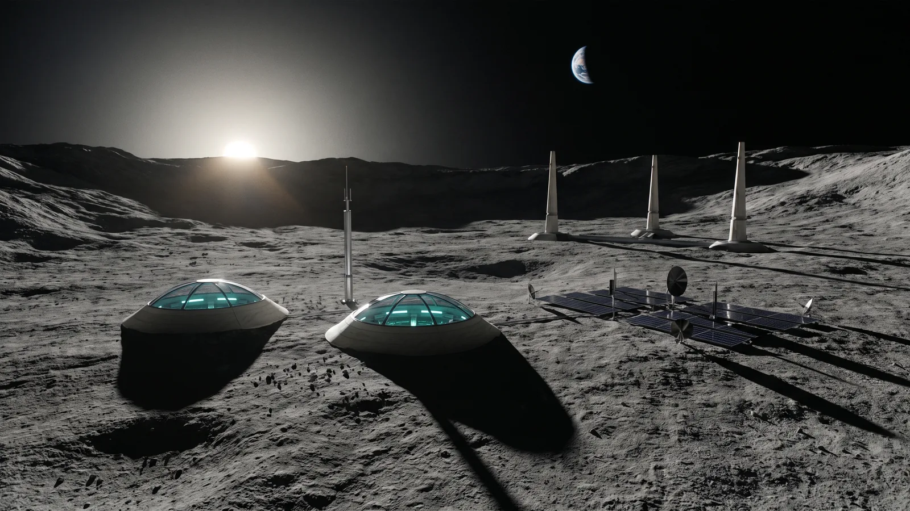
Lunar Accord is one polity governing two environments that share almost no material culture: its Earth territories (Mediterranean Zone, Australasian Ring, African Belt) and its off-world capital, Luna Haven — the pressurised, airlocked lunar colony where the Meridian Levels sit. Both are Lunar Accord, in exactly the sense that a rebuilt tower and its ruined margin are both the same territory under the rule above — the dual register is deliberate world-building, not an inconsistency to be smoothed over by treating one as the "real" Lunar Accord look and the other as an exception. A character or location's register is set by where on Lunar Accord's territory they physically are, not by which register was used in the previous scene.
Warm sandstone, terracotta, and restored gold light across the Mediterranean, Australasian, and African repair zones. Nothing old is hidden; everything repaired is repaired beautifully — visible stitching, patched masonry, salvage integrated with visible craft rather than concealed. The Accord also builds new, and builds high: sandstone-composite towers, rammed earth and mycelium composite raised on embedded structural lattices, living walls and deep shade, a 2087 city at full height in the Accord's own materials. Daylight behaves like daylight; lamps are warm rather than clinical. What people wear follows the same logic as what they build: zero-wastage heritage tailoring, cut as interlocking geometric panels so that a garment consumes its whole cloth, spun from reclaimed high-end fibre — bio-cellulose, recovered ocean polymer, micro-woven hemp. The cut marries structured European drape and asymmetric lapels to relaxed, fluid, oversized silhouettes: sweeping duster coats, wide-brimmed solar shields. Details are worked into the material rather than added onto it, the signature being pre-collapse map coordinates laser-etched fine along the seams — the ruins a wearer's territory was rebuilt beside, carried on the body. The Earth register carries no emissive element of any kind: nothing glows, nothing pulses, no piping, no integrated light. That absence is the whole contrast with Luna Haven, and it is a rule rather than a tendency.
A pressurised, airlocked, subterranean colony with no natural daylight — grown rather than built. Vertical habitats threaded with bioluminescent blue-green living walls and mycorrhizal substrate; every cubic metre of pressurised space is a deliberate cultural decision. The colony's airlocks sit only at its outer boundary, where habitat meets lunar vacuum; every interior corridor, chamber, and habitat beyond that boundary is as fully breathable, lit, and alive as anywhere on Earth — no character is ever suited up for survival indoors, because indoors never requires it. The bio-tech suit is Luna Haven's own everyday dress, not protective gear: breathable membrane fabric, integrated diagnostics, and bioluminescent edge piping worn as local uniform and cultural identity, grown out of the same bio-integrated materials as the colony itself. It replaces the Earth register's woven repair aesthetic the way any culture's clothing reflects the environment that shaped it — chosen, not demanded.
Luna Haven's interior is airtight throughout, but not blind to its own surface. The colony's engineered pressure envelope routinely includes large-scale glazing — reinforced, load-bearing viewport walls, vaulted skylights, full architectural domes — through which the lunar surface, sky, and horizon are visible from many interior spaces. This glazing is always a sealed pressure boundary, structurally continuous with the rest of the colony's shell, thick and load-bearing rather than a thin present-day window: generous and frequent by design, one of the ways the colony's architecture asserts its own confidence rather than its fragility, never an open aperture to vacuum. The one garment that never appears indoors under this glazing is an EVA suit. Stepping outside the pressure envelope onto the open lunar surface — for maintenance, research, or any other reason — is a distinct, deliberately rare event, and it requires a true pressurised EVA suit: sealed helmet, life support, thermal protection, visually unmistakable from the everyday bio-tech suit described above. Any scene set on the open lunar surface should read as exceptional the moment it happens, precisely because nowhere else on Luna Haven ever requires it.
The colony is not purely invisible from the surface. Alongside its vast underground bulk, a limited number of its own structures genuinely break the regolith and stand in the open lunar environment: the domed and vaulted glazing caps described above, plus a handful of dedicated surface installations — docking and transit ports, solar and communications arrays, structural spires anchoring the deep habitat shafts below — all built in the same considered, sculptural 2087 material grammar as the colony's interior, never a present-day space-station module bolted onto rock. Seen from outside, on the surface or from orbit, these read as the visible tip of something far larger: elegant, deliberate architecture holding its own against an airless, hostile landscape, with the true scale of the colony implied rather than shown. Luna Haven is, and should always read as, mostly underground — these surface structures are accents, not the colony's primary face.
Inside, the scale is real. The colony's great districts occupy sealed lava-tube voids — vaults hundreds of metres across, their natural basalt-and-regolith roofs lined with a pressure membrane — and each holds an interior skyline of grown-composite towers, terraces down its flanks and a water court along its floor; the glazing caps are where those vaults reach the surface, and through them the fourteen-day sun, the black sky and Earth are seen, a view and never the colony's working light. The Habitat Corridors are the residential loops threaded around the vaults; the civic and research strata — the Dome Plaza, the Meridian Levels, the Archive — lie beneath the southern districts, and no district vault runs beneath the Archive datum. The volume is the colony's air reserve: a district holding that much air turns a life-support fault into hours rather than minutes, and its bulkheads can seal it in minutes — for a district, never for a person.
Surface solar fields carry the colony through the fourteen-day lunar day, buried fission plants carry its base load through the fourteen-day night, and the radiator fins on the shaft-head collars reject its heat, which has nowhere else to go. Lunar Dawn, every twenty-nine and a half days, is the colony's festival and its most practical day: the power margin widens, the caps are opened to the returning sun, the living walls are brightened for one evening, and postponed repairs begin.
The fixed five million is the colony's life-support capacity, not a quota: no one is refused a child, and when births and arrivals press the margin the colony grows districts, so the pressure shows as waiting for space, never as permission. An arrival is given First Breath — a first meal in the vault where they first breathed colony air. The dead are returned to the walls: composted into the living walls and the substrate, so that in a closed colony they become the next breath, and the household keeps a cutting from that wall; mourners dim their suit piping for a lunar cycle. Near the deep levels, residents know the Meridian's displacements, when they come, as "a second", logged like a tremor and carried as an ordinary hazard.
The colony's blue-green light is not wild bioluminescence. It is an engineered luminescent system: the fungal bioluminescence pathway, self-sustaining rather than fed with an added substrate, its emission targeted to the panel surfaces themselves and coupled to fluorescent proteins that shift and carry the output, with the mycorrhizal substrate network doing the work no organism could do alone — supplying the whole wall continuously, so brightness is a property of the colony's metabolism rather than of any single organism's. That is also why the light is controllable: it is banked low for the night register and brought up for a working shift because the colony decides so, not because biology tires. What that buys, stated plainly so every scene holds the same level: it is ambient working light — enough to move, meet, work and be seen by, the light Luna Haven's people have spent their whole lives under. It is not sunlight and it is not a lamp. Anything that needs real precision — an instrument face, a document, a surgical or fine-assembly task — carries its own dedicated light, and that light is diegetic too: instrument glow, terminal light, an edge-lit case. Wild bioluminescence elsewhere in the trilogy stays honestly dim by contrast; the Martian Preserve's moss takes minutes of dark adaptation before it reads as light at all, and that contrast is deliberate. That moss glows blue at rest and shifts to amber where it is actively responding — the two colours are the ecology at idle and the ecology tracking something, and the shift itself is the signal. Luna Haven's walls are the engineered case, and the only one.
Accent colours — canon, not just a website implementation detail
Lunar Accord's Earth register carries warm gold and terracotta, the colour of restored daylight and repaired stone. Luna Haven carries bioluminescent teal, sourced directly from the colony's own living walls and mycorrhizal substrate — its colour identity comes from its biology, not a design choice layered on top. The two never substitute for each other: gold light means repaired Earth; teal light means Luna Haven, full stop. On the body the distinction is absolute: an Earth-register garment emits nothing at all, and bioluminescent piping on an Earth-side character is an error, not a stylistic choice. (Implemented on the website as --la and --lh respectively — the code follows this canon, not the other way around.)
This dual register governs every clothing description and every system-voice line involving Lunar Accord — see Clothing grammar by bloc and special territory, and System-voice convention, both below.
A pre-2087 real-world landmark is a third register, distinct from both the rebuilt-2087 world and the ruined margins above: kept recognisable and restored to gleaming condition rather than redesigned or left to decay — an existing, deliberate pattern spanning every territory, not isolated set-dressing.
Confirmed at eleven locations, spanning every territory and Luna Haven, off-world:
São Verde · Corporate Union
Verdant Citadel
Mediterranean Zone · Lunar Accord
Sagrada Spire
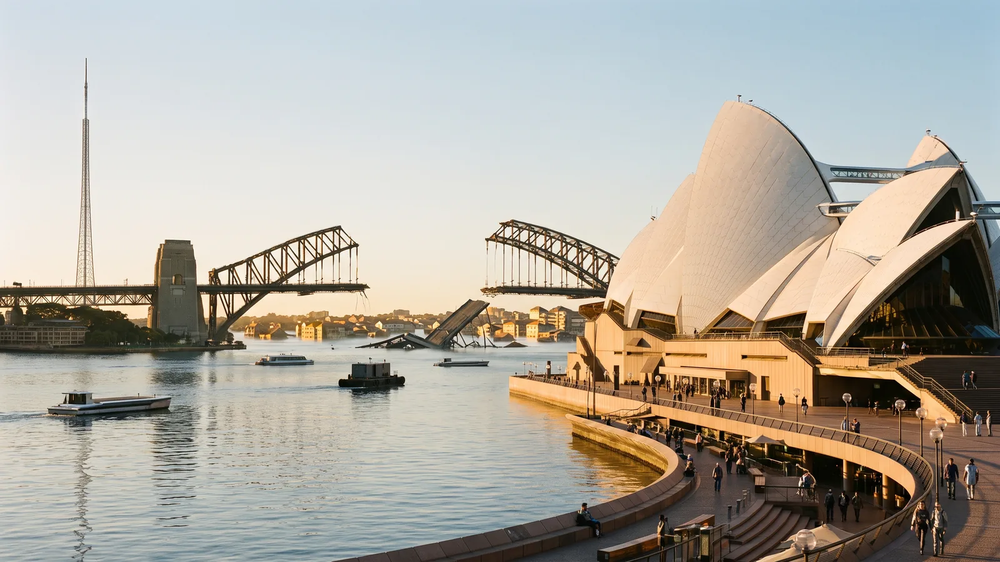
Australasian Ring · Lunar Accord
Sydney Hub / Orbital Station
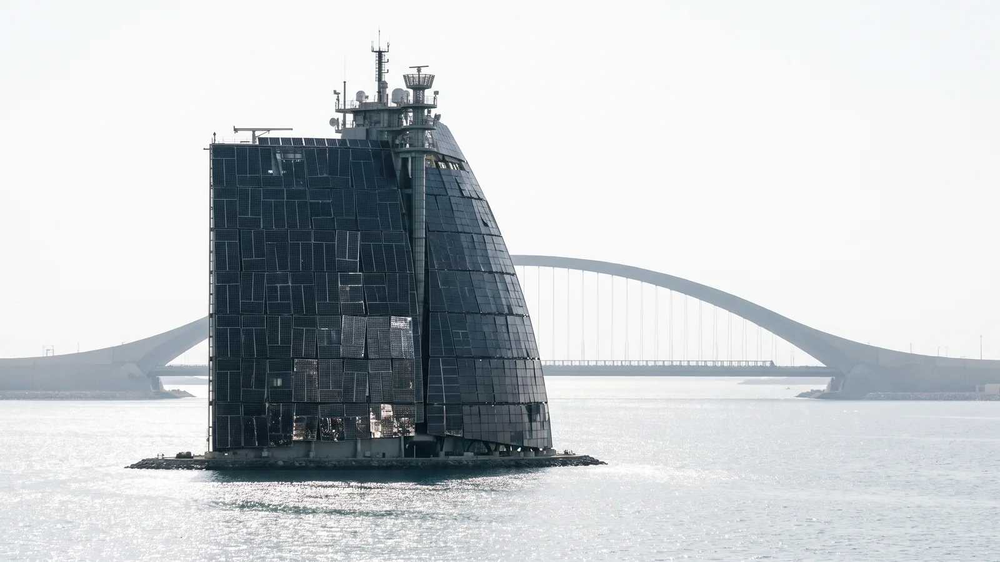
Gulf Crescent · Corporate Union
Logistics Command
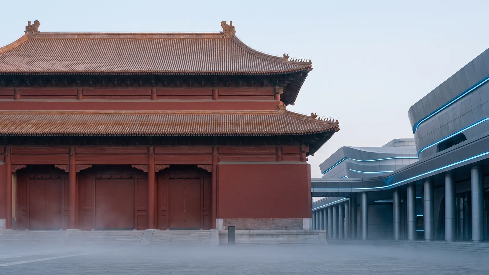
Beijing Command · Sovereign Coalition
Ministry Annex
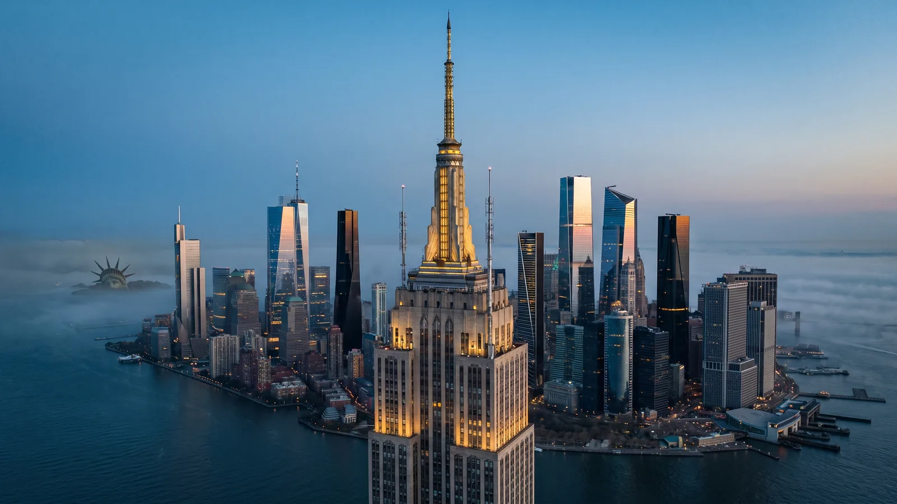
New Manhattan · Corporate Union
Flood mitigation: yes — within the existing engineered flood terraces/seawalls
Baikal Complex · Sovereign Coalition
(historic tunnels/bridges, reinforced, still carrying maglev)
Flood mitigation: no — inland frozen lake
Pearl Delta · Sovereign Coalition
Flood mitigation: no — hillside site
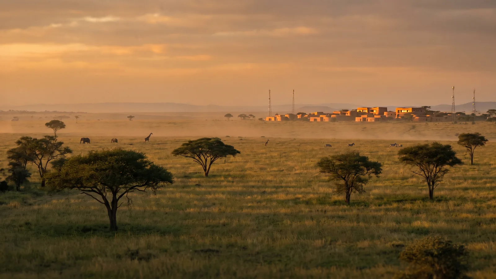
African Belt · Lunar Accord
(a preserved natural landmark, not a building)
Flood mitigation: no — inland highland
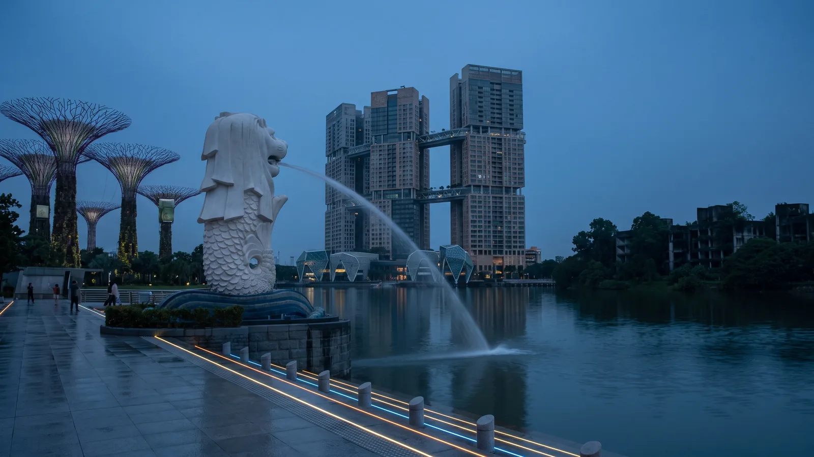
Neo Singapore · Treaty Zone
Flood mitigation: yes — waterfront site
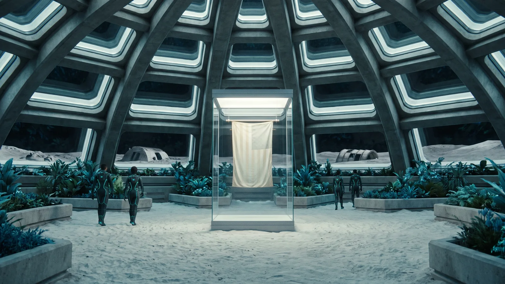
Luna Haven
, sealed in a vacuum display case, sited at Dome Plaza
Flood mitigation: not applicable — off-world, no water
Alongside its preserved landmark, kept and impeccable, every territory also names a ruin anchor: a distinct, recognisable pre-collapse structure, genuinely derelict, held at a distance in the same frame. The two are never the same building — the preserved landmark sits inside the rebuilt perimeter, extending the old silhouette; the ruin anchor sits outside it, in real decay. Three territories depart from the pattern for a reason worth keeping on record: the Martian Preserve is exempt from both halves — it is not a human settlement and nothing in it is pre-collapse in Earth's sense, so there is no year-2087 infrastructure to set in front of a ruin and no ruin to put behind it; its oldest made places are kept by its own custodians under its own law, and are never drawn as ruins. Luna Haven has no pre-collapse ruin at all — the Moon was never inhabited before the colony — so its ruin half is a substitute: the colony's own first-wave regolith-sintered founding shelters, half-buried and long abandoned outside the present shell. This is the colony's own history, never a present-day space-agency relic. Turan Waste takes the opposite substitution: its ruin half is ordinary, but the "impeccably kept" preserved half assumes an institution to keep it, which the Margins have none of. Its substitute is a pre-collapse structure the settlements maintain themselves — aligned, clean and working, kept by hand rather than by mandate — which is not a weaker version of the register but the sharpest statement the Margins can make of it: a landmark kept beautifully by people with no authority to keep it.
Each territory's own foreground/ruin pairing, drawn straight from its canon data:
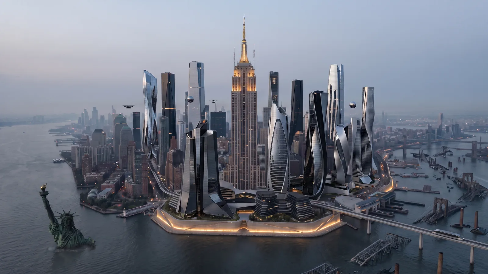
Foreground · Empire State Building
Ruin · Statue of Liberty
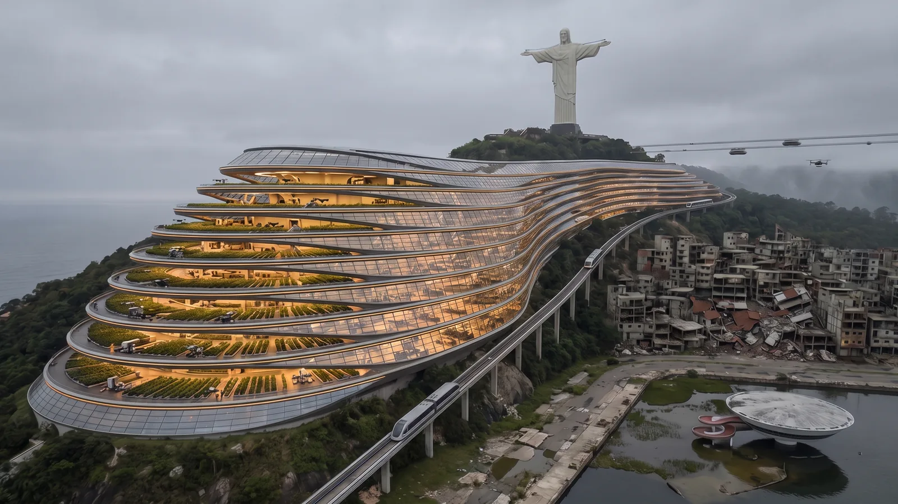
Foreground · Cristo Redentor
Ruin · Niterói Contemporary Art Museum
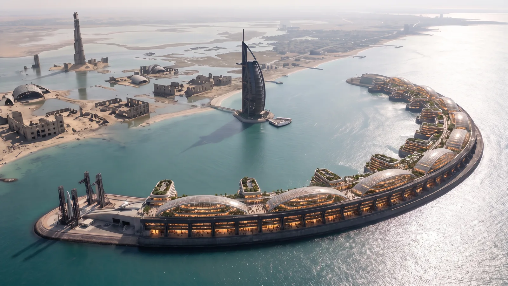
Foreground · Burj Al Arab
Ruin · Burj Khalifa
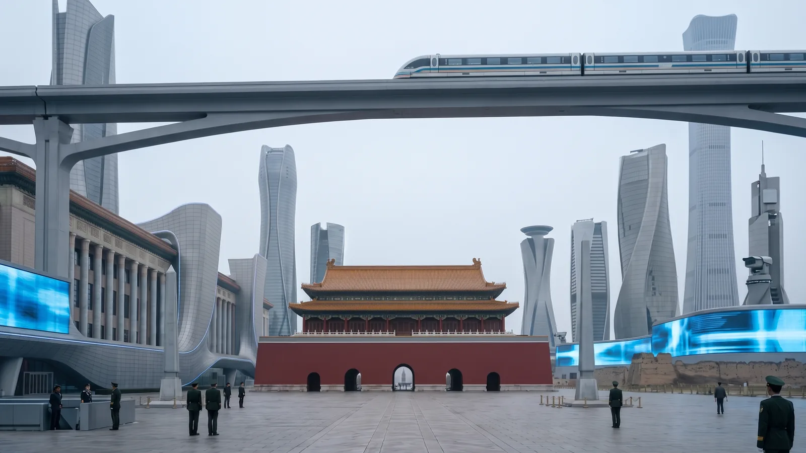
Foreground · Tiananmen Gate + Great Hall of the People
Ruin · Eroded section of the ancient defensive wall
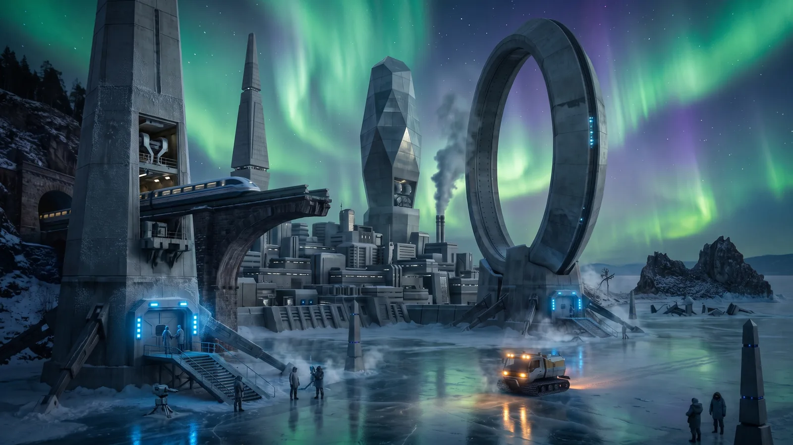
Foreground · Circum-Baikal Railway
Ruin · Shaman Rock
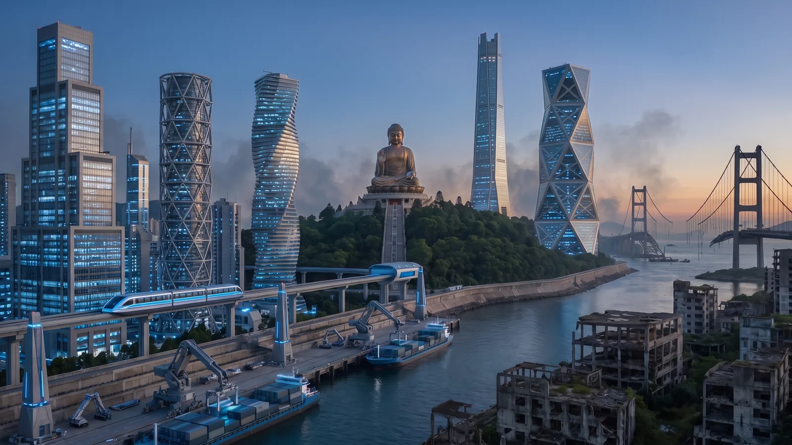
Foreground · Tian Tan Buddha
Ruin · Tsing Ma Bridge
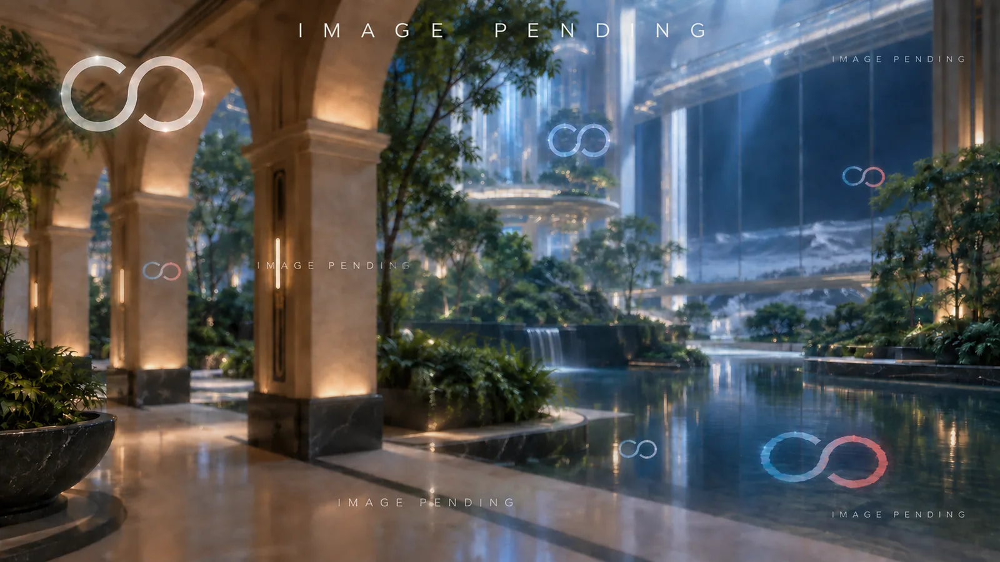
Foreground · Sagrada Família
Ruin · Mirador de Colom (the Columbus monument)
Foreground · Sydney Opera House
Ruin · Sydney Harbour Bridge
Foreground · Nairobi National Park
Ruin · Kenyatta International Convention Centre tower
Foreground · The colony's surface crown — domes, transit ports, spires
Ruin · First-wave regolith-sintered founding shelters
Preserved landmark · Apollo flag — not in the establishing frame
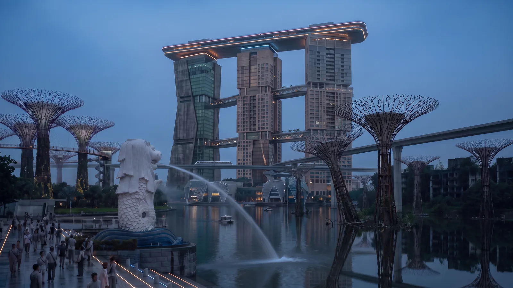
Foreground · The Merlion
Ruin · Supertree armatures, old bay gardens
Foreground · exempt — Not a settlement and not rebuilt — a landscape-scale pocket-dimension biosphere rendered at its historical peak. There is no 2087 infrastructure to put in the foreground.
Ruin · exempt — 3.8 billion years old and never human. There is no pre-collapse ruin, and inventing one would break the location's premise.
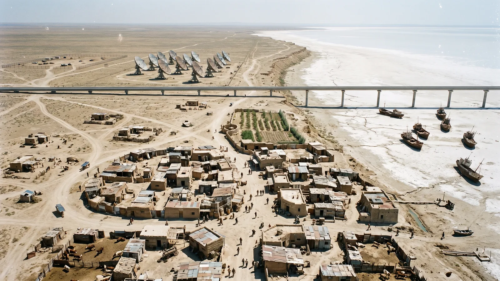
Foreground · Baikonur tracking-dish array
Ruin · Aral ship graveyard
Foreground · exempt — Not a settlement and not rebuilt -- a sub-region of the Martian Preserve's landscape-scale pocket-dimension biosphere, rendered at its historical peak. There is no 2087 infrastructure to put in the foreground.
Ruin · exempt — 3.8 billion years old and never human. There is no pre-collapse ruin, and inventing one would break the location's premise.
Foreground · exempt — Not a settlement and not rebuilt -- a sub-region of the Martian Preserve's landscape-scale pocket-dimension biosphere, rendered at its historical peak. There is no 2087 infrastructure to put in the foreground.
Ruin · exempt — 3.8 billion years old and never human. There is no pre-collapse ruin, and inventing one would break the location's premise.
Foreground · exempt — Not a settlement and not rebuilt -- a sub-region of the Martian Preserve's landscape-scale pocket-dimension biosphere, rendered at its historical peak. There is no 2087 infrastructure to put in the foreground.
Ruin · exempt — 3.8 billion years old and never human. There is no pre-collapse ruin, and inventing one would break the location's premise.
Every daring year-2087 material or technology traces to a real, currently-known or plausibly extrapolatable scientific principle — specific enough that the line from today's research to the trilogy's version is visible, even where the exact execution is fictional. The destination is spectacular; the path there is not invented from nothing. African Belt's "grown" architecture is grounded in real mycelium-composite and microbial-cementation research, with embedded structural lattices for genuine load-bearing height. New Manhattan's flood terraces are grounded in real storm-surge-barrier engineering — the Thames Barrier, Venice's MOSE — and Gulf Crescent's marine-lock arc sits in the same lineage, its climate domes a response to the published projection that the Persian Gulf reaches wet-bulb temperatures past human survivability rather than decoration; its "mirrored" surfaces are energy-harvesting photovoltaic glazing, not a mirror for its own sake. Luna Haven's lava-tube habitats are grounded in NASA and ESA's real Marius Hills lunar-base proposals, and its living-wall material in NASA's own myco-architecture research into fungal building materials for space habitats. Luna Haven's light is the hardest case, and is addressed on its own terms above (see "Luna Haven's light").
A single named reference for the positive 2087 vocabulary scattered across the clothing grammar and elsewhere in this document — compiled from existing usage, not invented fresh, so prose draws on one consistent bank instead of re-deriving phrasing each time.
— 2087 still has screens, and they are 2087 objects: thin, flexible or transparent sheets, edge-lit glass, surfaces grown into walls and furniture, holographic and volumetric displays, alongside gestural control surfaces, neural lace, subdermal implants, direct/neural interfaces and instrument rigs and bays. What they replace is the kit of the twentieth and early twenty-first centuries: boxy monitors, bezelled panels on stands, keyboards, mice and wired devices. A field tablet or handheld is a designed 2087 object, a slim instrument made for its work. Writing exists wherever it would in life — a sign over a door, a mark on a case, a page in a notebook, words on a screen someone is reading — in the language of the place, and only there; nothing is ever annotated, captioned or labelled from outside the world.
— replacing unadorned steel/glass curtain walls, drywall, plastic, present-day poured concrete, repetitive glass-box towers: adaptive biotech-integrated composite; self-healing composite panelling; living wall / mycorrhizal substrate; sculptural, deliberately varied silhouette (never repetitive glass-box rows); rammed earth + instrument bays (African Belt's agro-ecological register, usable anywhere a bloc's architecture should read as grown-with-the-land).
— replacing wheeled vehicles, present-day roads: maglev; aerial/orbital transit; engineered flood terrace / adaptive seawall (the default flood-mitigation vocabulary — see the preserved-landmark register's point 6, above). In the Corporate Union this is an absolute, not a preference. Its territories contain no roads, no asphalt and no combustion vehicle of any kind — not as a stated policy the fiction argues for, but as the physical fact of how those places were rebuilt. Movement inside a Union territory is multi-layered maglev, autonomous drone corridor, or pedestrian plaza, and nothing else. This exclusion is stated here explicitly, once, so any scene set in a Union territory can rely on it rather than re-establishing it from scratch.
— diegetic sources only: bioluminescence, aurora, instrument/screen light, industrial lamps, natural daylight, amber scan-light (Corporate Union's specific signature). No fluorescent tube light, no present-day LED office panelling, no editorial fill light.
— full per-bloc grammar lives in "Clothing grammar by bloc and special territory" and is not duplicated here. The one connective rule across every bloc: any personal tech is neural lace, subdermal implants, gestural interface or a designed 2087 handheld — never a present-day phone or a wired device.
Per-bloc material palette (architecture and environment, cross-referencing the clothing grammar rather than repeating it):
Black, anthracite, biometric amber accents; mirrored, surveillance-optimised surfaces
Polished grey composite, cold state blue piping; institutional tailoring in built form
Reclaimed bio-cellulose, hemp and recovered ocean polymer in ochre, sun-bleached sage, terracotta and raw clay; linen and denim among them; warm gold accents; visible mended/patched craft; nothing emissive
Bio-tech membrane, bioluminescent edge piping, mycorrhizal substrate
Grown, trained or cut from its own living and mineral matter — lattice fibre, heartwood, basalt, root-wall — never fabricated; layered rust-red, teal and green over iron-oxide and basalt; researchers in clean technical field gear over Luna Haven base layers
Neutral grey/stone/linen; tri-colour boundary lighting (Corporate Union amber, Sovereign Coalition blue, Lunar Accord gold), present in the environment only, worn by no single character
Bloc atmosphere
Each bloc reads as a whole environment, not only a material and a colour. Corporate Union space carries a clinical chiaroscuro — diegetic biometric amber light throwing sharp, deep shadows into narrow canyons and enclosed marine docks — with vegetation held in geometric vertical bio-reactors, glossy and uniformly optimised, tended by biometric-tagged pollinators and songbirds: curated, never wild. Sovereign Coalition space is stark and institutional — harsh, high-contrast state-blue light through freezing mist or open cold air, searchlights cutting cleanly through haze. Each bloc built its 2087 city to say what it is. The Union's is beautiful on purpose and watchful by design: covered city inside the terraces and climate envelopes, uncovered at the edge in sight of the ruins. The Coalition's is monumental and legible: long axes, high halls, cold light, energy plants built as monuments, and gates and credential thresholds left visible. The Accord's was rebuilt by people who intended to stay. Lunar Accord's Earth territories carry warm, restored daylight and lamplight; Luna Haven's is the bioluminescent teal ambient working light described above. The Unregulated Margins read by unmediated daylight and hand-made dark — hard open sun and true shadows by day, filament and salvaged strip-light, cook-fire, lamp and instrument after dusk, never a lit facade or a standard fitting.
Vegetation is present everywhere, scaled to each bloc's material grammar and moderate wherever people live — visible in every frame and dominant in none. In Lunar Accord, African Belt and Luna Haven's living-wall idiom it is worked into the architecture itself: living-wall substrate, street trees, courtyard planting, roof decks, tended and in balance with the built material. In Corporate Union and Sovereign Coalition's sterile, surveillance-coded blocs it is not absent, only smaller in scale and more controlled — vertical hydroponic strips, engineered terrariums, manicured courtyard gardens: a bloc built on optimisation extending that same control to nature rather than excluding it. Fauna is a hint, never a population: birds in the air, a small number of terrestrial animals at the frame's edge, never posed or grouped, never a flock, herd or livestock — an inhabited territory reads as a place people live, not a farm, a zoo or a reserve. The Martian Preserve is the exception to both: a landscape-scale biosphere at its historical peak, 3.8 billion years old and never human, where vegetation and fauna are genuinely wild. It is layered rather than red on red — rust-red canopy over a blue-green to teal understorey, green at open water, copper and crimson where the ground is mineral — and it is held: life is born, feeds and dies there, but no lineage changes until the ending releases it, so its corridors never move and new ground stays strangely bare. Its herds number in the hundreds, something rarely seen hunts the forest margin, and the margin the quarantine allows is tight.
Every territory holds a population appropriate to a settlement in the hundred-thousand-to-millions range, with multiple large structures at depth and a visible transit corridor at district scale — never one building standing alone, and never a homestead or a commune regardless of how rural a bloc's material grammar might otherwise suggest (African Belt's rammed-earth vocabulary and Lunar Accord's Earth territories generally are where this most needs stating). The standing calibration: generous, not gratuitous — a space is sized for the crowd using it and the function it houses, grand because the year 2087 built it to hold real people, never large as spectacle with nothing filling it.
Avoid list — the same vocabulary as negative examples; this doubles as the scan-term list for any future anachronism sweep of prose: smartphone, phone, laptop, present-day monitor or bezelled flat panel (a 2087 screen is fine), keyboard, mouse, wired cable, present-day car/truck, elevator button panel, wifi/bluetooth, email, fluorescent tube lighting, present-day LED office panelling, generic present-day furniture, unadorned poured concrete (outside the ruin/margin register), repetitive glass curtain-wall towers, spacesuit / EVA suit / pressure helmet / astronaut gear (Luna Haven's bio-tech suit is local everyday dress, not survival equipment — see "Lunar Accord's dual territorial register," above).
Most entries below are one per bloc. Luna Haven is the exception: it is Lunar Accord territory (see "Lunar Accord's dual territorial register," above), not a separate bloc, but its environment is different enough from Lunar Accord's Earth territories to require its own clothing entry rather than being folded into "Lunar Accord" wholesale. Martian Preserve and Treaty Zone entries are special territories in their own right, governed by no Earth bloc.
Tech-wear, lab coats, mirrored visors. Optimised for surveillance and the corporate optic. Black, anthracite, biometric amber accents.
Crisp institutional uniforms, high collars, military tailoring. Polished grey composite, cold state blue piping.
Advanced eco-tailoring, and deliberately mended as a value rather than a shortage — visible stitching or patchwork done with care and skill, on otherwise clean, well-fitted garments. Repair as craft, not poverty. Garments are built from interlocking geometric panels cut for zero wastage, spun from reclaimed bio-cellulose, recovered ocean polymer and micro-woven hemp; the cut blends structured European draping and asymmetric lapels with relaxed, fluid, oversized silhouettes — duster coats, wide-brimmed solar shields. Pre-collapse map coordinates are laser-etched fine along the seams. Every garment carries at least one mark of provenance or repair, made to a couture standard; etched coordinates count as one. Palette: ochre, sun-bleached sage, terracotta, raw clay, with linen, denim and restored warm gold accents. Completely devoid of glowing technology — no piping, no integrated light, nothing emissive anywhere on the garment, which is precisely what distinguishes it from Luna Haven's suit below. Synthetic citizens wear the same tailoring, cut so its seams follow the body's, with fine gloves over their reading fingertips.
Bio-tech suits, breathable membranes, integrated diagnostics. Bioluminescent edge piping in low light. Local everyday dress, not survival equipment — every indoor space on Luna Haven is already pressurised and fully livable, so this is never rendered as a sealed pressure suit, helmet, or anything reading as EVA/astronaut gear; it is sleek, fitted, and worn the way any colony's own culture dresses for its environment. Synthetic citizens wear the same suit, its membrane carrying heat out rather than breathing, its piping the only light they carry.
Clean, well-maintained technical field gear over Luna Haven base layers, suited to a preserved and cared-for environment, not a grubby dig site.
The Guardians are grown persons, and they dress. Each body is its own Martian material — Aur'k's rust-red and graphite plating, Vaera's matte bio-metal, Echo's four bodies in one pale grown material, Zhenyth's moss and bark — and each face is readable to those who know it: Aur'k's sculpted between its plates, Vaera's deliberately unresolved as any one person's, Echo's the same across its four bodies, Zhenyth's set low and inward under a bark brow. Over these bodies they wear few garments, grown from the rust-dark lattice fibre of the Preserve's gates: a field mantle, a council collar, a band of mourning, each marking which office is being exercised. A garment drawn over a sensing surface means the Guardian is not reading the person in front of it; drawn back, it is attending, with leave. Kythara has no body. Their only light is the dim bioluminescence of moss and fibre. Bare human skin is the one wrong reading of any Guardian surface.
Mixed-bloc civilian transit wear. No single bloc's aesthetic dominates; layered garments in neutral tones (grey, stone, linen) that can carry any bloc's accent patch without visual conflict. Tri-colour boundary lighting — Corporate Union amber, Sovereign Coalition blue, Lunar Accord gold — is visible in the environment rather than worn. Characters in Neo Singapore should appear de-identified: legible as belonging somewhere, unreadable as belonging fully anywhere.
Hand-made from what is at hand, each piece its own material, as each wall in a Margins settlement is its own; bloc garments are salvaged and re-cut until no bloc reads in them. Layered for hard sun, salt wind and cold nights, in the settlement's own hand-worked colours, mended visibly and well. Nothing on the body is lit.
Each bloc's customs follow the same logic as its law and its clothes: the Union scores, the Coalition issues, and the Accord chooses and mends.
Languages and translation. English is the Corporate Union's corporate standard, with Portuguese in São Verde and Arabic and Persian among the Gulf Crescent's workforce. Mandarin is the Sovereign Coalition's language of state, with Cantonese in the Pearl Delta and Russian at Baikal. The Accord's Earth territories speak Catalan, Spanish and Italian in the Mediterranean Zone, English and the region's many languages across the Australasian Ring, and Swahili and English in the African Belt. Luna Haven speaks an English full of borrowings from four decades of arrivals. Neo Singapore speaks every language, with English and Malay at the counters; the Margins speak whatever the walkers brought. In the Union every translated sentence is logged; in the Coalition it is monitored; in the Accord translation is private by statute, and speaking someone's language unaided is a courtesy people notice.
The working lexicon.
Ordinary words with an in-world sense, used the same way wherever they appear.
| Word | Where | Sense |
|---|---|---|
| Still? / Still. | Accord | Renewing a consent between intimates |
| A second | Luna Haven | A moment of perceptual displacement near the Meridian |
| The ones who walked | Accord | Those who left on foot or by their own route |
| Covered / uncovered | Union | Inside or outside the coverage contract |
| Kept | Preserve | A thing held and not explained |
| Not yours to record | Preserve | A Guardian's withholding |
| Long-kept | Accord (synthetic) | One who has outlived their household |
| Quick-talk | Accord (synthetic) | Fast speech among synthetic persons |
| Misha wrote | Archive | The form for citing a witness record |
What a person carries, keeps at home and hands down says which bloc made them.
The Accord notebook — reclaimed-cellulose paper, ink, no electronics — is a record no system can edit. Gifts follow the same lines: in the Accord a mended thing, mended by the giver; in Luna Haven a cutting; in the Margins water; in the Union a subscription, which Accord people take as an insult.
Each bloc marks its year by what it lives under. Luna Haven keeps Lunar Dawn and First Breath.
Every bloc disposes of the body, keeps or releases the record, and marks the mourner. Luna Haven returns its dead to the walls.
Who lives together, and how, follows each bloc's rules about worth.
Every bloc jokes, and the jokes say what it fears.
What a bloc wears for ceremony, at home and in intimacy shows who decides what a person wears.
What each bloc will not do in public.
The devotion. A loose popular devotion grows around the Meridian, strongest in the Accord's Earth territories and the Margins: people keep vigils at landfall sites and speak of the Meridian as a gift held in trust. It is gentle, plural and leaderless, and it is right about awe and humility and the sense that the Meridian is not humanity's. Its danger is its longing: many in it want union, the dissolving of the self into something larger, which is the coercive answer in devotional form.
Established during Chapter 1 drafting. Computer systems and ambient AI infrastructure across the trilogy may speak short, diegetic responses to the humans operating them — a console confirming a reading, a lab system reporting a result, a building system logging a request. This is a prose-level convention only, and it adds no new mechanism to the Meridian's laws in the Canonical Rules.
Register follows each bloc's established aesthetic, so a console's voice should read as an extension of its bloc's identity rather than a neutral utility:
---
The prose-craft decisions are locked. They live in the Style Guide and are read from it, so this page and the drafting rules cannot drift apart.
Rotating third-person limited, past tense, across all three books. Each scene commits fully to one POV character's interiority and must not shift to another character's interiority within that scene — no head-hopping. This is a scene-level rule, not a chapter-level one: many chapters in this bible are built from two or three parallel character threads within a single chapter (Chapter 1's Elena Vázquez / Elowen contrast; Chapter 2's Jīn Wú / Mara Ekeberg / Thandi Okoro sequence), and that remains the intended structure. Each thread is its own clearly separated scene, marked with a scene break, and stays inside one character's POV for its full length. "Rotating" describes movement between scenes, never movement within one.
Each chapter opens with a short scene header identifying bloc, location, and POV character:
CORPORATE UNION — NEW MANHATTAN, SURVEILLANCE SPIRE / Elena Vázquez
The header supplies orientation only — bloc, place, whose eyes — so the prose itself never has to stop and explain where it is. Prose still does the work of rendering how that place looks, sounds, and feels through the POV character's senses; the header is not a substitute for that, only a way to avoid opening every scene with expository set-up. For any scene that crosses the Martian Preserve boundary, append the elapsed-time differential required by Law 5 (Canonical Rules), e.g. / Misha Fedorov — Preserve day 3, Luna Haven +14h, so the time dilation stays legible to the reader without narrating it.
A commercial engine (clear sentence structure, fast pacing, dialogue-forward, varied rhythm, invisible prose under action and exchange) carrying literary detail (thematic resonance, specific metaphor, sensory precision) as seasoning rather than a sustained mode — roughly 70% commercial engine to 30% literary flavour. This also governs interiority: a character's inner state should be shown through action, dialogue, and specific physical detail rather than summarised in the abstract. Slow down for poetic, sensory description when a setting or technology is introduced for the first time; stay lean and propulsive through action and dialogue.
Target 2,500–3,000 words, averaging approximately 2,700 across all 90 chapters (roughly 81,000 words per book, 243,000 across the trilogy). Action-heavy chapters may run shorter, not much under 1,800 words; lore-heavy or climactic chapters may run longer, up to about 3,500 words, with 4,000 as an absolute outer ceiling reserved for exceptional chapters. Let the scene's actual pacing need set the length within these bounds rather than padding or trimming to hit a number.
The Corporate Union and the Sovereign Coalition are operational allies, not ideological partners — shared fear of the Lunar Accord produces alignment without trust. From the Sovereign Coalition's side, the alignment is one of operational convergence under pressure: coercive methods differ between the two blocs, but their control logic converges. Both blocs treat the Lunar Accord as a strategic opponent — the Corporate Union regards consent-based governance as weakness, while the Sovereign Coalition treats inclusivity and transparency as destabilising. The Lunar Accord operates as their ethical and political counter-model: consent slows action but preserves legitimacy.
Luna Haven's relationship to the two opposing blocs is one of laboratory target — it is a symbolic threat to Corporate Union control, and Sovereign Coalition research intensifies precisely when control fails. Luna Haven's relationship to the Lunar Accord is its core political and scientific home: it embodies post-scarcity justice and, with that, vulnerability. Its relationship to the Martian Preserve is one of access, not sovereignty — Luna Haven is the primary staging ground for preservation work, entered via the Meridian rather than claimed.
The Martian Preserve's relationship to Luna Haven is one of responsive ecological interface — Martian Preserve state changes reflect and constrain Luna Haven's action, not the reverse. Neo Singapore sits outside all bloc alignments as a non-aligned choke point: the Corporate Union and Sovereign Coalition manage contact through a restricted treaty zone that ensures essential flow continues despite bloc hostility, while Neo Singapore itself preserves exchange without resolving the underlying conflict.
The Corporate Union's relationship to the Martian Preserve is extractive-coercive: it attempts to access the Martian Preserve as a dimensional weapons programme without consent-based entry, and its failure states (Law 4) are the primary source of Martian Preserve instability. The Sovereign Coalition's relationship to the Martian Preserve is observational-acquisitive: it monitors and studies access without direct entry, treating the Martian Preserve as a strategic asset to be controlled rather than engaged.